Five stages: bare board, power, one channel, the XIAO and DAC, then the other three channels. Each stage has a picture of where the parts go, a checklist, a picture of where to probe, and the readings to expect. Designators are the ones printed on the board. Your ticks and readings are saved in this browser only.
Component side, the right way up for the silkscreen: XIAO top left, DC jack bottom left. Polarity marks: band = diode cathode, + = positive pad, dot = pin 1. Click a picture for full size.
Five minutes with a meter before any solder. The two shorts found in review were fixed in the layout; this confirms the fab made what was sent, while it is still easy to see.
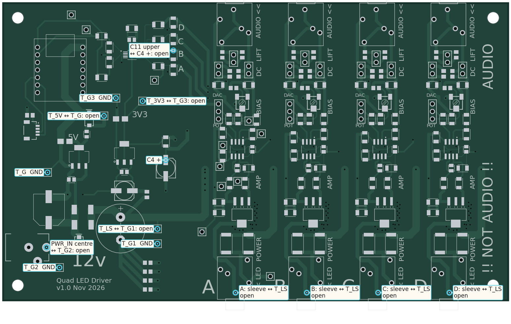
| Done | # | Do | Probe | Expect | Reading |
|---|---|---|---|---|---|
| 1 | Look at the slots in the jack and DC-jack pads | AUDIO_IN, J_LED, PWR_IN | copper inside each slot (plated) | ||
| 2 | Resistance: 12 V input to GND | PWR_IN centre pin ↔ T_G2 | open (OL) | ||
| 3 | Resistance: LED supply to GND | T_LS ↔ T_G1 | open | ||
| 4 | Resistance: 3.3 V rail to GND | T_3V3 ↔ T_G3 | open | ||
| 5 | Resistance: 5 V rail to GND | T_5V ↔ T_G | open | ||
| 6 | The old short: LED supply to each strip's collector | T_LS ↔ J_LED sleeve pad, strips A-D | open on all four | ||
| 7 | The other old short: bias supply to DAC B | C4 + pad ↔ C11 upper pad | open | ||
| 8 | Ground test points are one net | T_G ↔ T_G1 ↔ T_G2 ↔ T_G3 | ≈ 0 Ω |
The 12 V input, polarity diode and filter, the 3.3 V analog regulator (VR1) and bias filter, and the 5 V regulator (VR2) that will feed the XIAO. Nothing downstream yet, so the supply current is just the two regulators.
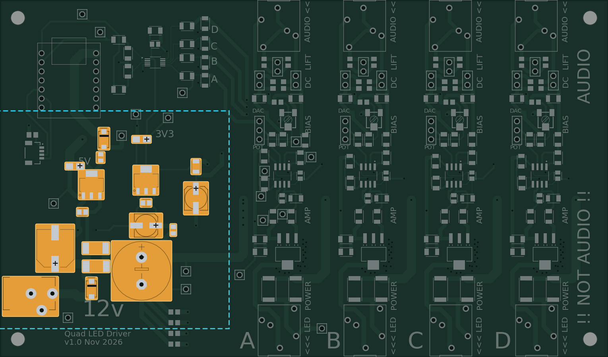
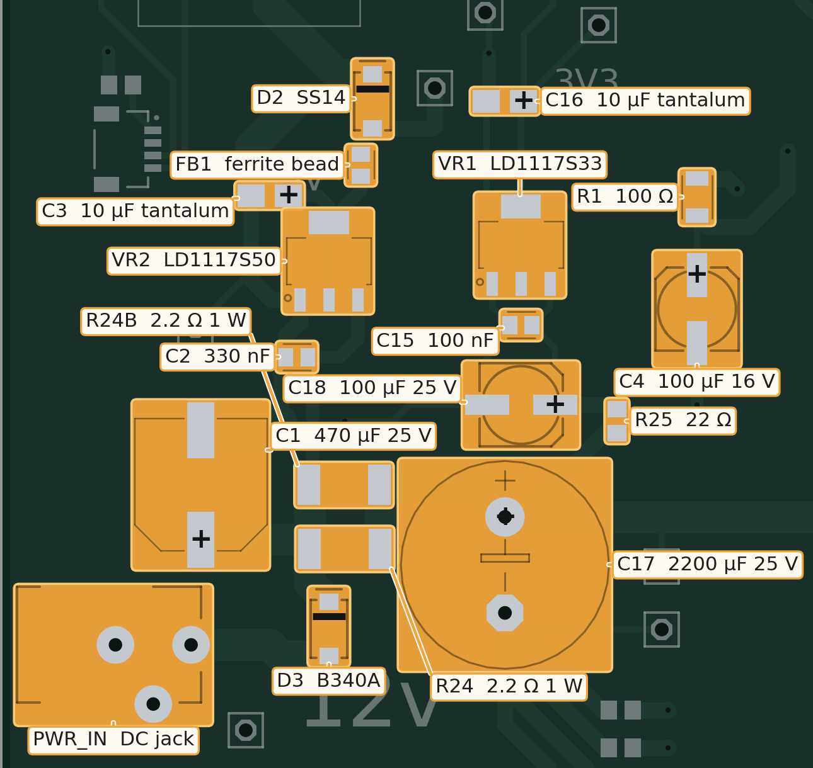
| Fitted | Ref | Value | Part | Note |
|---|---|---|---|---|
| C2 | 330 nF | 0805 X7R 50 V | at VR2's input | |
| C15 | 100 nF | 0805 X7R 50 V | at VR1's input | |
| R25 | 22 Ω | 0805 | feeds VR1 from the LED supply | |
| R1 | 100 Ω | 1206 | bias-supply filter, with C4 | |
| FB1 | ferrite bead | 0805, 600 Ω @ 100 MHz, ≥ 1 A | or a 0 Ω link | |
| D3 | B340A | SMA, 3 A Schottky | band = cathode, at the upper end | |
| D2 | SS14 | SMA, 1 A Schottky | band = cathode, at the upper end | |
| C16 | 10 µF tantalum | 3216 (case A) | band on the part = +, to the pad marked + | |
| C3 | 10 µF tantalum | 3216 (case A) | band on the part = +, to the pad marked + | |
| R24 | 2.2 Ω 1 W | 2512 | ||
| R24B | 2.2 Ω 1 W | 2512 | fit both: 1.1 Ω together | |
| VR1 | LD1117S33 (3.3 V) | SOT-223 | the 3.3 V one: don't swap with VR2 | |
| VR2 | LD1117S50 (5 V) | SOT-223 | the 5 V one, powers only the XIAO | |
| C1 | 470 µF 25 V | SMD can, 10 × 10 mm | + is the lower pad; black stripe (−) up | |
| C18 | 100 µF 25 V | SMD can, 6.3 mm | black stripe = − | |
| C4 | 100 µF 16 V | SMD can, 6.3 mm | black stripe = − | |
| C17 | 2200 µF 25 V | radial, 7.5 mm pitch | long leg = +, to the pad marked + | |
| PWR_IN | DC jack | PJ-102AH, 5.5 × 2.1 mm | fit last in this stage |
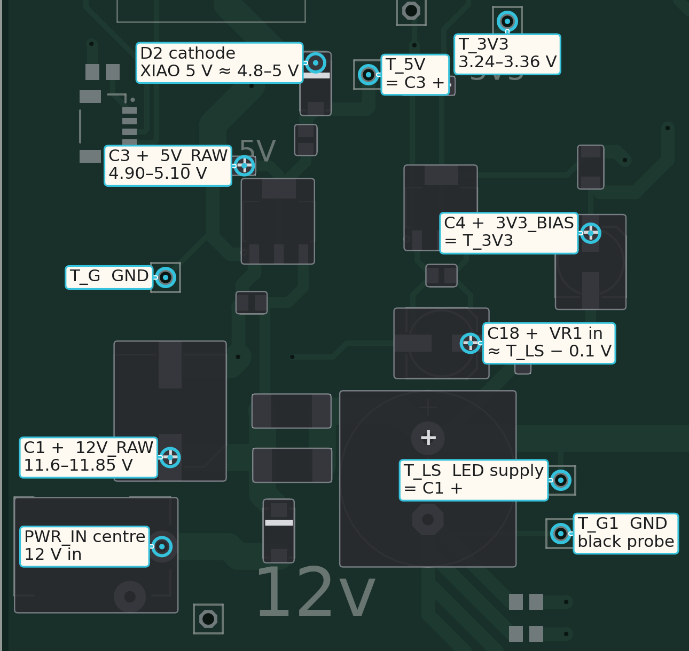
| Done | # | Do | Probe | Expect | Reading |
|---|---|---|---|---|---|
| 1 | Before power: resistance 12 V in to GND | PWR_IN centre pin ↔ T_G2 | climbs as the caps charge, ends > 1 kΩ | ||
| 2 | Bench supply 12 V, current limit 100 mA, switch on | supply's current display | 10-20 mA once the caps have charged | ||
| 3 | Input after the polarity diode | C1 + pad (12V_RAW) | 11.6-11.85 V | ||
| 4 | LED supply | T_LS | same as C1 + (within 0.05 V) | ||
| 5 | 3.3 V regulator input | C18 + pad | ≈ 0.1 V below T_LS | ||
| 6 | Analog 3.3 V rail | T_3V3 | 3.24-3.36 V | ||
| 7 | Bias supply | C4 + pad (3V3_BIAS) | same as T_3V3 | ||
| 8 | 5 V regulator output | C3 + pad (5V_RAW) | 4.90-5.10 V | ||
| 9 | 5 V after the ferrite | T_5V | same as C3 + | ||
| 10 | XIAO 5 V, after D2 (no XIAO yet) | D2 upper pad (cathode) | ≈ 4.8-5 V (no load) | ||
| 11 | VR1, VR2, D3 after a minute | finger | cold | ||
| 12 | Optional: reverse the supply leads (limit 50 mA) | supply's current display | ≈ 0 mA, all rails 0 V |
One complete channel on strip A, driven from its own trimmer (jumper on POT), so it works before any firmware exists. R_KEL2 is the odd one out: it sits beside C17, not in the strip.
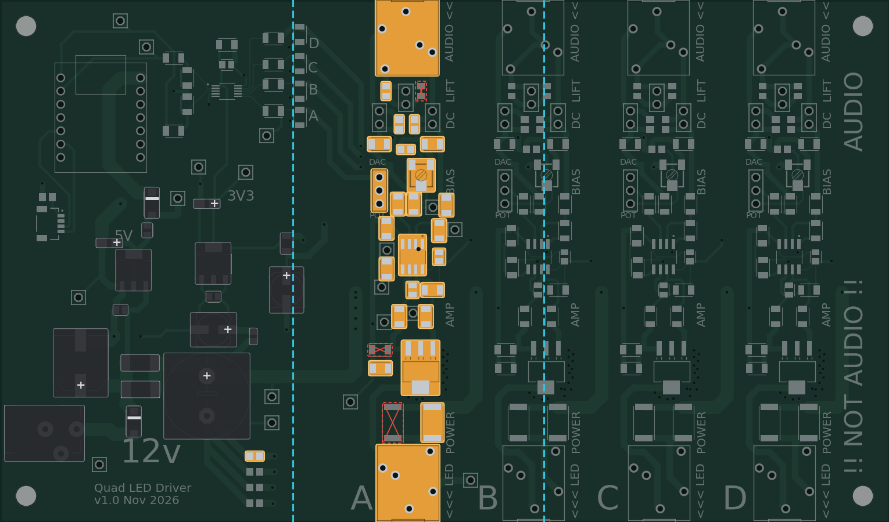
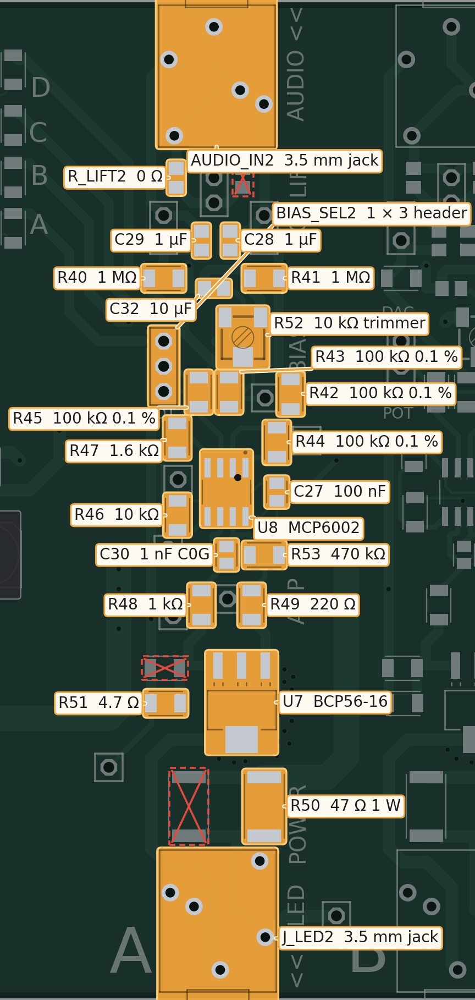
| Fitted | Ref | Value | Part | Note |
|---|---|---|---|---|
| C27 | 100 nF | 0805 | next to U8 pin 8 | |
| C30 | 1 nF C0G | 0805 | ||
| C28 | 1 µF | 0805 | input cap | |
| C29 | 1 µF | 0805 | input cap | |
| C32 | 10 µF | 0805 | trimmer wiper to GND | |
| R40 | 1 MΩ | 1206 | ||
| R41 | 1 MΩ | 1206 | ||
| R42 | 100 kΩ 0.1 % | 1206 thin film | the four 100k set the hum rejection | |
| R43 | 100 kΩ 0.1 % | 1206 thin film | ||
| R44 | 100 kΩ 0.1 % | 1206 thin film | ||
| R45 | 100 kΩ 0.1 % | 1206 thin film | ||
| R46 | 10 kΩ | 1206 | set-point divider | |
| R47 | 1.6 kΩ | 1206 | set-point divider: sets full scale | |
| R48 | 1 kΩ | 1206 | ||
| R49 | 220 Ω | 1206 | base resistor | |
| R53 | 470 kΩ | 1206 | small offset so zero is fully off | |
| R51 | 4.7 Ω | 1206 | current sense | |
| R_LIFT2 | 0 Ω | 0805 | input sleeve to ground | |
| R_KEL2 | 0 Ω | 0805 | Kelvin link, by C17 (not in the strip) | |
| U8 | MCP6002 | SOIC-8 | dot = pin 1 | |
| U7 | BCP56-16 | SOT-223 | big tab is the collector | |
| R50 | 47 Ω 1 W | 2512 | LED series resistor, runs warm | |
| R52 | 10 kΩ trimmer | Bourns 3314J | ||
| BIAS_SEL2 | 1 × 3 header | 2.54 mm + jumper | jumper on POT (lower pair) to start | |
| AUDIO_IN2 | 3.5 mm jack | Lumberg 1503 09 | audio input | |
| J_LED2 | 3.5 mm jack | Lumberg 1503 09 | LED output: never plug audio in here |
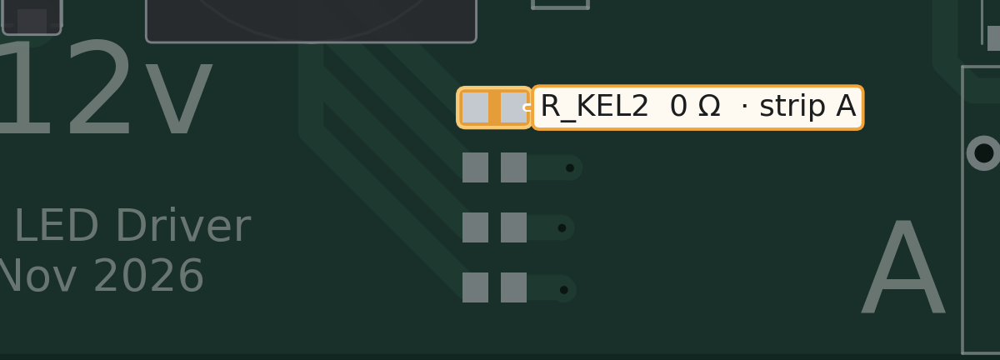
Start with the jumper on POT (lower pair of BIAS_SEL2) and nothing in either jack. Vbias is the header's middle pin. The sense voltage is T_EM measured against T_KG, not against ground.
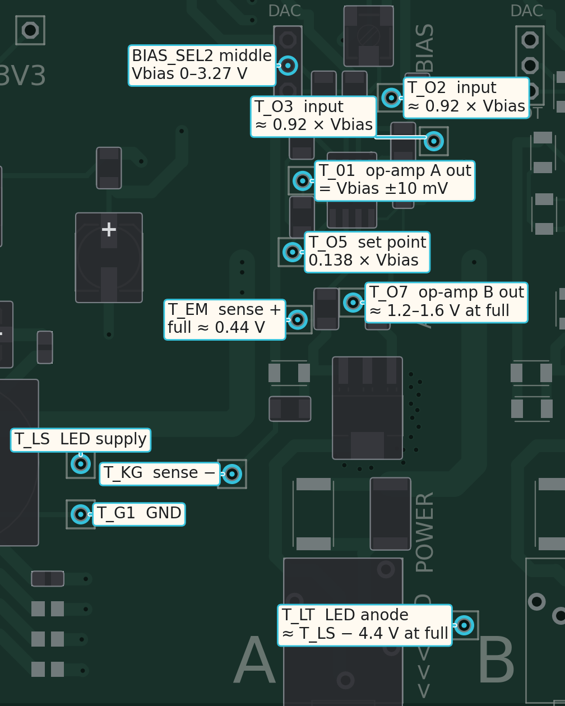
| Done | # | Do | Probe | Expect | Reading |
|---|---|---|---|---|---|
| 1 | Before power: jumper on POT, trimmer anywhere, nothing plugged in | BIAS_SEL2 | jumper on the lower pair (POT) | ||
| 2 | Current limit 200 mA, 12 V on | supply's current display | as stage 1 (≈ 15 mA) | ||
| 3 | Op-amp supply | U8 pin 8 (or T_3V3) | 3.24-3.36 V | ||
| 4 | Turn the trimmer to one end, then the other | BIAS_SEL2 middle pin (Vbias) | 0 V at one end, ≈ 3.27 V at the other. Note which way is 0 | ||
| 5 | Op-amp A output, trimmer at mid | T_01 | = Vbias, within ±10 mV | ||
| 6 | Op-amp A inputs | T_O2 and T_O3 | equal to each other, ≈ 0.92 × Vbias | ||
| 7 | Set point | T_O5 | 0.138 × Vbias (0.45 V at full) | ||
| 8 | Trimmer to 0, then plug the LED into J_LED2 | LED | off | ||
| 9 | Turn the trimmer up slowly | T_EM (+) and T_KG (−) | rises smoothly; LED current = V ÷ 4.7 Ω | ||
| 10 | Trimmer at full | T_EM ↔ T_KG | ≈ 0.44 V (≈ 94 mA) | ||
| 11 | Op-amp B output at full | T_O7 | ≈ 1.2-1.6 V. At 3.3 V with the LED dim: check U7 | ||
| 12 | LED anode at full | T_LT | ≈ T_LS − 4.4 V | ||
| 13 | Supply current at full | supply's current display | stage-1 current + ≈ 94 mA | ||
| 14 | After 2 minutes at full | U7 and R50 | warm, not too hot to touch | ||
| 15 | Mid brightness, idle | T_EM ↔ T_KG | steady reading; no whine in the pickup | ||
| 16 | Audio: interface line out → AUDIO_IN2, trimmer at mid, 1 kHz sine, raise slowly | pickup / ears | clean until ±1.65 V peak, then clips flat | ||
| 17 | No signal, input plugged in | pickup | no hum; compare TRS and TS leads |
The MCP4728 with its four output filters, the I2C parts, the Qwiic socket, and the XIAO on headers. Then the DAC takes over channel A’s bias, first from dac_test, then from the real Peripheral firmware.
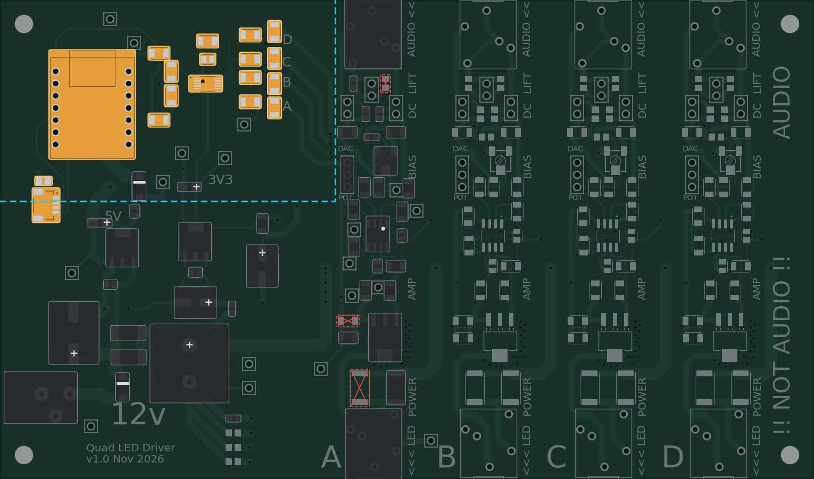
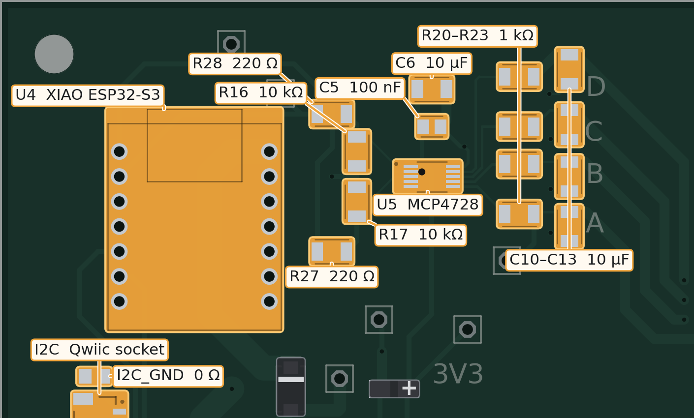
| Fitted | Ref | Value | Part | Note |
|---|---|---|---|---|
| U5 | MCP4728 | MSOP-10, 0.5 mm pitch | dot = pin 1. Solder it first, check for bridges with a loupe | |
| C5 | 100 nF | 0805 | at U5 pin 1 | |
| C6 | 10 µF | 1206 | ||
| R16 | 10 kΩ | 1206 | I2C pull-up to the XIAO's 3V3 | |
| R17 | 10 kΩ | 1206 | I2C pull-up to the XIAO's 3V3 | |
| R27 | 220 Ω | 1206 | series, SDA | |
| R28 | 220 Ω | 1206 | series, SCL | |
| R20 | 1 kΩ | 1206 | DAC A filter | |
| R21 | 1 kΩ | 1206 | DAC B filter | |
| R22 | 1 kΩ | 1206 | DAC C filter | |
| R23 | 1 kΩ | 1206 | DAC D filter | |
| C10 | 10 µF | 1206 | DAC A filter | |
| C11 | 10 µF | 1206 | DAC B filter | |
| C12 | 10 µF | 1206 | DAC C filter | |
| C13 | 10 µF | 1206 | DAC D filter | |
| I2C_GND | 0 Ω | 0805 | joins the Qwiic ground | |
| I2C | Qwiic socket | JST SH 4-pin right-angle (SM04B-SRSS-TB) | network I2C | |
| U4 | XIAO ESP32-S3 | two 1 × 7 female headers | USB-C towards the top edge. Solder the headers with the XIAO plugged in |
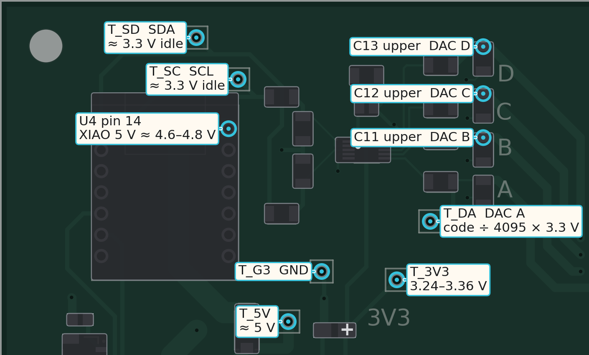
| Done | # | Do | Probe | Expect | Reading |
|---|---|---|---|---|---|
| 1 | XIAO out, jumper on POT. 12 V on (limit 300 mA) | supply's current display | as stage 2 (≈ 15 mA plus the LED) | ||
| 2 | DAC doesn't get warm | U5, finger | cold | ||
| 3 | 3.3 V rail still good | T_3V3 | 3.24-3.36 V | ||
| 4 | 12 V off. Fit the XIAO (USB-C to the top edge). 12 V on | supply's current display | up by ≈ 30-60 mA; the XIAO boots | ||
| 5 | XIAO 5 V pin | U4 pin 14 | ≈ 4.6-4.8 V | ||
| 6 | I2C lines idle | T_SD, T_SC | ≈ 3.3 V | ||
| 7 | Plug in USB (12 V still on) | XIAO | nothing changes; USB enumerates | ||
| 8 | Flash dac_test, env xiao-s3-board; open the monitor | serial monitor | "network slave 0x13 started", "device at 0x60 (MCP4728)" | ||
| 9 | check 10000 | serial monitor | 0 write, 0 read failures, 0 wrong values | ||
| 10 | a 4095, a 2048, a 0 | T_DA | ≈ 3.3 V, 1.65 V, 0 V | ||
| 11 | b 4095, c 4095, d 4095 | C11, C12, C13 upper pads | ≈ 3.3 V each | ||
| 12 | Move BIAS_SEL2's jumper to DAC (upper pair); a 4095 | T_EM ↔ T_KG | ≈ 0.44 V, LED at full | ||
| 13 | a 0 | LED | fully off | ||
| 14 | ramp 4000 | LED | fades up and down every 4 s | ||
| 15 | Real firmware: I2CElectronics env peripheral-led, -t uploadfs then -t upload | Central / GUI over the Qwiic socket | the Central finds the board; LIGHT_1 follows |
dac_test: pio run -e xiao-s3-board -t upload, then pio device monitor -e xiao-s3-board in LEDAudioDriver/dac_test. It starts ramping channel A at boot. Commands: a–d 0–4095, all, ramp 4000, stop, check 10000, stats.
IDLE_LEVEL 1.0 with EEPROM_SYNC wrote full scale into the DAC's EEPROM.The same parts as strip A, three more times. The table lists each part with its designator in every strip; only the names change. Do one strip at a time and run its tests before starting the next, so a fault stays in one place.
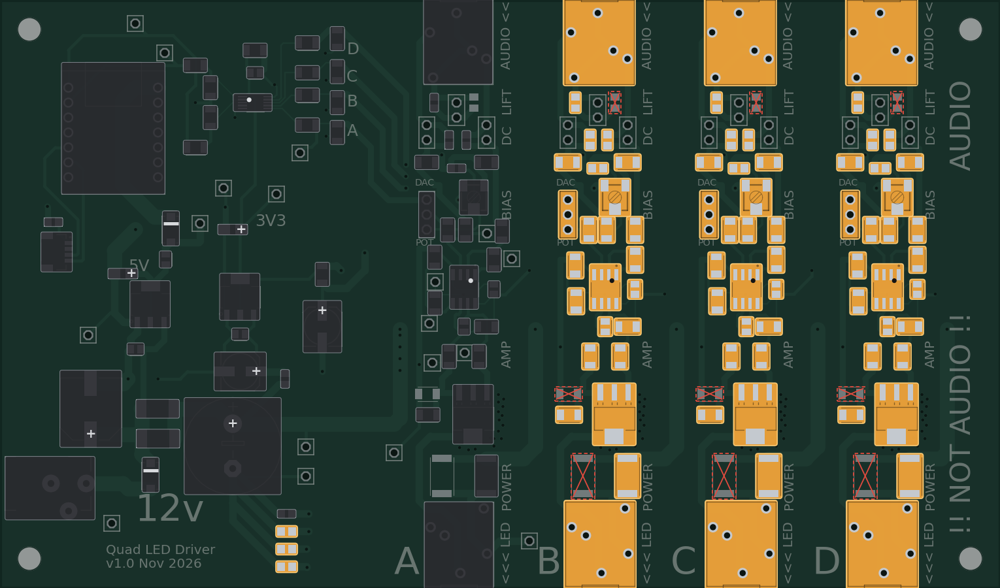
| Value | Part | A | B | C | D | Note |
|---|---|---|---|---|---|---|
| 100 nF | 0805 | C27 | next to the op-amp pin 8 | |||
| 1 nF C0G | 0805 | C30 | ||||
| 1 µF | 0805 | C28 | input cap | |||
| 1 µF | 0805 | C29 | input cap | |||
| 10 µF | 0805 | C32 | trimmer wiper to GND | |||
| 1 MΩ | 1206 | R40 | ||||
| 1 MΩ | 1206 | R41 | ||||
| 100 kΩ 0.1 % | 1206 thin film | R42 | the four 100k set the hum rejection | |||
| 100 kΩ 0.1 % | 1206 thin film | R43 | ||||
| 100 kΩ 0.1 % | 1206 thin film | R44 | ||||
| 100 kΩ 0.1 % | 1206 thin film | R45 | ||||
| 10 kΩ | 1206 | R46 | set-point divider | |||
| 1.6 kΩ | 1206 | R47 | set-point divider: sets full scale | |||
| 1 kΩ | 1206 | R48 | ||||
| 220 Ω | 1206 | R49 | base resistor | |||
| 470 kΩ | 1206 | R53 | small offset so zero is fully off | |||
| 4.7 Ω | 1206 | R51 | current sense | |||
| 0 Ω | 0805 | R_LIFT2 | input sleeve to ground | |||
| 0 Ω | 0805 | R_KEL2 | Kelvin link, by C17 | |||
| MCP6002 | SOIC-8 | U8 | dot = pin 1 | |||
| BCP56-16 | SOT-223 | U7 | big tab is the collector | |||
| 47 Ω 1 W | 2512 | R50 | LED series resistor, runs warm | |||
| 10 kΩ trimmer | Bourns 3314J | R52 | ||||
| 1 × 3 header | 2.54 mm + jumper | BIAS_SEL2 | jumper on POT (lower pair) to start | |||
| 3.5 mm jack | Lumberg 1503 09 | AUDIO_IN2 | audio input | |||
| 3.5 mm jack | Lumberg 1503 09 | J_LED2 | LED output: never plug audio in here |
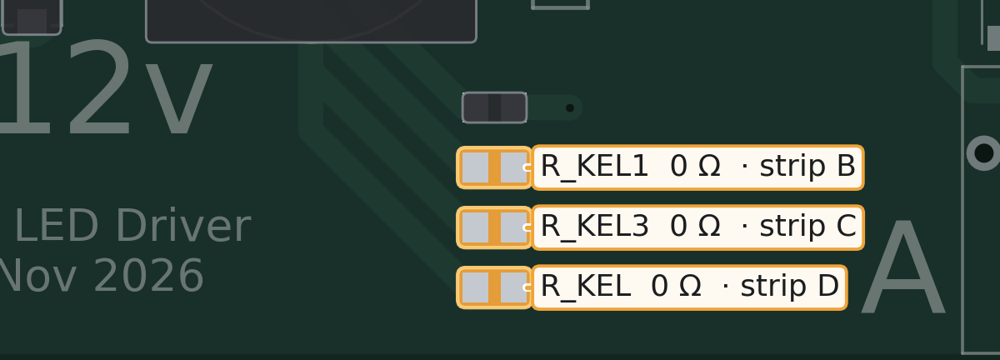
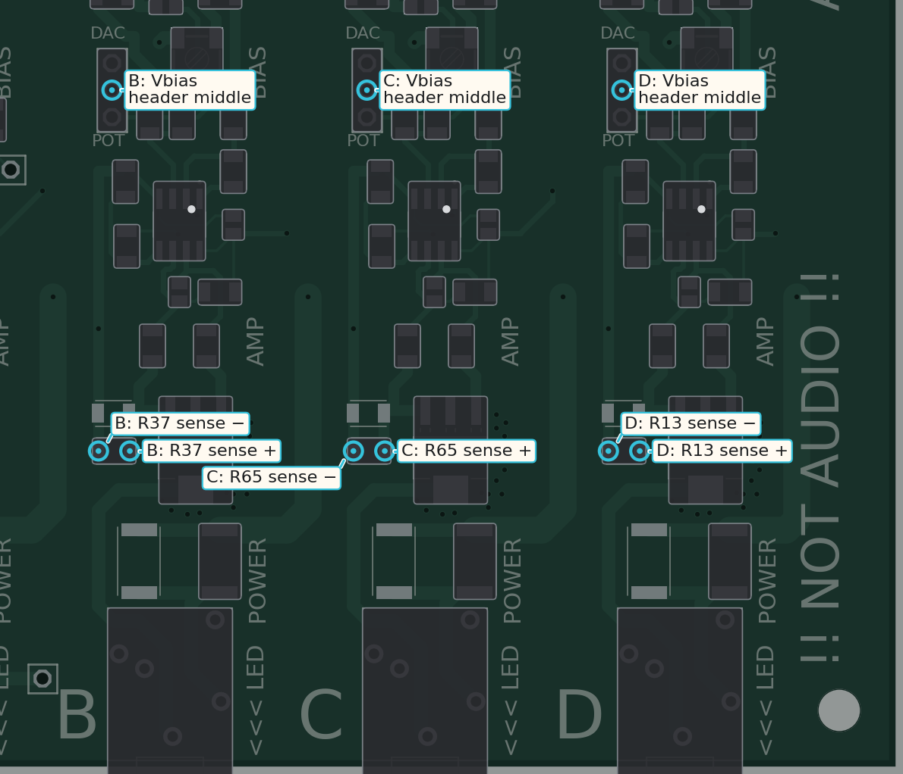
| Done | # | Do | Probe | Expect | Reading |
|---|---|---|---|---|---|
| 1 | Strip B: jumper BIAS_SEL1 on POT, trimmer to 0, LED in J_LED1, 12 V on | LED | off | ||
| 2 | Strip B: trimmer sweep | BIAS_SEL1 middle pin (Vbias) | 0 → ≈ 3.27 V | ||
| 3 | Strip B: trimmer at full | across R37 (4.7 Ω) | ≈ 0.44 V (≈ 94 mA) | ||
| 4 | Strip B: jumper to DAC; b 4095, then b 0 | R37, LED | full, then fully off | ||
| 5 | Strip B: audio into AUDIO_IN1 | pickup | as strip A | ||
| 6 | Strip C: jumper BIAS_SEL3 on POT, trimmer to 0, LED in J_LED3, 12 V on | LED | off | ||
| 7 | Strip C: trimmer sweep | BIAS_SEL3 middle pin (Vbias) | 0 → ≈ 3.27 V | ||
| 8 | Strip C: trimmer at full | across R65 (4.7 Ω) | ≈ 0.44 V (≈ 94 mA) | ||
| 9 | Strip C: jumper to DAC; c 4095, then c 0 | R65, LED | full, then fully off | ||
| 10 | Strip C: audio into AUDIO_IN3 | pickup | as strip A | ||
| 11 | Strip D: jumper BIAS_SEL on POT, trimmer to 0, LED in J_LED, 12 V on | LED | off | ||
| 12 | Strip D: trimmer sweep | BIAS_SEL middle pin (Vbias) | 0 → ≈ 3.27 V | ||
| 13 | Strip D: trimmer at full | across R13 (4.7 Ω) | ≈ 0.44 V (≈ 94 mA) | ||
| 14 | Strip D: jumper to DAC; d 4095, then d 0 | R13, LED | full, then fully off | ||
| 15 | Strip D: audio into AUDIO_IN | pickup | as strip A | ||
| 16 | All four channels at full | supply's current display | ≈ 0.45 A | ||
| 17 | LED supply under full load | T_LS | ≈ 11.2 V | ||
| 18 | Crosstalk: audio into A, B-D steady | sense resistors of B-D (AC mV) / pickups | B-D don't move with A's audio | ||
| 19 | After 5 minutes, all at full | R24 / R24B, VR2, every U7-twin | warm at most |